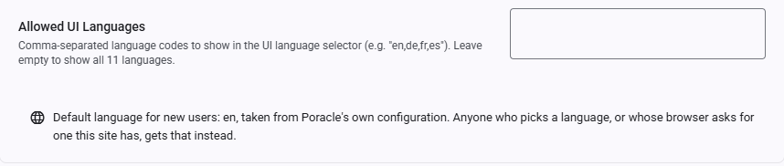

Internationalization (i18n)¶
PoracleWeb.NET supports 11 UI languages. Users can switch the interface language at any time without reloading the page.
Supported Languages¶
| Flag | Language | Code | Completeness |
|---|---|---|---|
 |
English | en |
Full (baseline) |
 |
Français | fr |
Full |
 |
Deutsch | de |
Full |
 |
Español | es |
Full |
 |
Nederlands | nl |
Full |
 |
Italiano | it |
Full |
 |
Português | pt |
Full |
 |
Português (BR) | pt-BR |
Full |
 |
Polski | pl |
Full |
 |
Dansk | da |
Full |
 |
Svenska | sv |
Full |
How It Works¶
Frontend (Angular)¶
The UI translation system uses ngx-translate for runtime language switching:
- Translation files are stored in
ClientApp/src/assets/i18n/{code}.jsonas flat namespaced JSON - Instant switching — changing language updates all visible text immediately, no page reload needed
The language a visitor lands on is decided in this order, first match winning:
- A language they chose before, from
localStorage('poracle-ui-language'). - A browser language this site ships.
de-ATmatchesde;pt-BRmatches exactly before falling back topt. - Poracle's own
locale, read from its configuration. A German community running Poracle withlocale = "de"therefore greets a first-time visitor in German rather than English, without configuring anything here. - English.
Only a deliberate choice is written to localStorage. A language picked automatically is left unwritten so it can be re-decided next visit — otherwise the first page load would be authoritative forever, and a visitor who arrived while Poracle was unreachable would stay on English no matter what the server reported afterwards.
Poracle's locale has to clear the same two filters as any other option: this site must ship that language, and allowed_languages must permit it. Poracle carries translations for languages this UI does not have, and those simply do not qualify.
Language selectors¶
There are two, and they sit next to each other in the user menu (top-right toolbar):
- Display language changes this site's text and nothing else. Its submenu is hidden when an admin has restricted the selector to a single language.
- Alert language is what Poracle writes your DMs in: alert text, Pokemon names, move names. The authoritative copy lives on your Poracle account (
humans.language), with a browser cache used only for the first render, so it follows you between devices and reconciles if the bot changes it.
Note that Pokemon names, types and forms in this site's own screens follow the display language, not the alert language — see Game data names below. Setting the display language to German gives you Bisasam in the species picker and Käfer on the type chips; the alert language decides what your DMs say.
Each submenu opens with its own hint line ("Changes this site's text only." / "Used for alert text and Pokemon names.") and lists the languages as flag and native name, with a check mark against the active one. Both draw from the same list of 11.
The two settings are independent. A German UI with English Pokemon names is a normal thing to want, and the menu now shows that they are separate rather than leaving it to a footnote.
This moved
The alert language used to live on the Areas page. It is in the user menu as of the Areas and Places merge, alongside the display language it kept being confused with.
Admin Configuration¶
Admins can restrict which languages appear in the selector by setting the allowed_languages site setting:
| Setting | Value | Effect |
|---|---|---|
allowed_languages |
(empty) | All 11 languages available |
allowed_languages |
en,de,fr |
Only English, German, and French shown |
English is always available regardless of the allowed_languages setting. The restriction applies to the signed-out login page as well as to signed-in users.

Set this in Admin → Settings under the Features category. Directly beneath it, the page reports Poracle's own configured locale as a read-only line — the default a new visitor lands on, per the order above. It is Poracle's to set, not this site's: it is read from Poracle's configuration on every load and cannot be edited or overridden here.
Translation File Structure¶
Each language file uses namespaced keys organized by feature area:
{
"NAV": {
"DASHBOARD": "Dashboard",
"POKEMON": "Pokemon",
"RAIDS": "Raids"
},
"MENU": {
"PAUSE_ALERTS": "Pause Alerts",
"LOGOUT": "Logout"
},
"DASHBOARD": {
"TITLE": "Dashboard",
"WELCOME": "Welcome back, {{username}}"
}
}
Key Namespaces¶
| Namespace | Content |
|---|---|
NAV |
Navigation sidebar labels |
TOOLBAR |
Toolbar buttons and tooltips |
BANNER |
Status banners (impersonation, paused, disabled) |
MENU |
User menu items |
SHORTCUTS |
Keyboard shortcut overlay |
TOAST / HTTP_ERROR |
Toast notifications and HTTP error messages |
DASHBOARD |
Dashboard page |
POKEMON |
Pokemon alarm management |
RAIDS |
Raid & egg alarm management |
QUESTS |
Quest alarm management |
INVASIONS |
Invasion alarm management |
LURES |
Lure alarm management |
NESTS |
Nest alarm management |
GYMS |
Gym alarm management |
FORT_CHANGES |
Fort change alarm management |
MAX_BATTLES |
Max battle alarm management |
AREAS |
Areas & Places page |
PROFILES |
Profile management |
GEOFENCES |
Custom geofences |
CLEANING |
Clean mode settings |
QUICK_PICKS |
Quick pick alarm presets |
HELP |
Help page: section titles, search, and the guide body HTML |
AUTH |
Login page |
ADMIN |
Admin pages |
ALARM |
Shared alarm dialog fields |
DIALOG |
Shared dialog components |
TEST_ALERT |
Test alert feedback |
WHERE |
Per-alarm delivery scope and saved places |
ALERT_DEFAULTS |
Alert Defaults dialog |
ALARM_INFO |
Shared alarm summary component |
ACTIVE_HOURS_CHIP |
Profile schedule pills |
LOCATION_WARNING |
Missing-coordinates warning banner |
ONBOARDING |
First-run wizard |
DELIVERY_PREVIEW |
Delivery preview map |
AREA_MAP |
Shared area map component |
REGION_SELECTOR |
Region picker for geofence submission |
GEOFENCE_DETAIL |
Geofence detail view |
GEOJSON_IMPORT |
GeoJSON import dialog |
GYM_PICKER |
Gym autocomplete |
POKEMON_SELECTOR |
Species picker |
TEMPLATE / TEMPLATE_SELECTOR |
Notification template picking and preview |
ADMIN_SETTINGS |
Admin settings page |
PAGINATOR |
Material paginator labels |
ERROR |
Error page and interceptor messages |
COMMON |
Common labels (Save, Cancel, Delete, etc.) |
Interpolation¶
Dynamic values use double-brace syntax: {{variable}}. These must be preserved exactly in translations:
HTML in Translations¶
Some values contain HTML tags (mainly <strong>) for emphasis. These must be preserved in translations and rendered with [innerHTML] binding:
Contributing Translations¶
To improve or add translations:
- Edit the relevant
src/assets/i18n/{code}.jsonfile - Ensure all keys from
en.jsonare present (missing keys fall back to English) - Preserve
{{placeholders}}and HTML tags exactly - Keep technical terms untranslated: Pokemon, Discord, Poracle, DM, IV, CP, PVP, ATK, DEF, STA
- Keep game proper nouns: Mystic, Valor, Instinct, Giovanni, Team Rocket, Dynamax, Gigantamax, PokéStop
- Use informal forms (du/tu/tú/je) appropriate for a gaming community
Game data names¶
Pokemon names, their types and their form names are not in the translation files at all. They come from Poracle, which translates them from its own i18n bundle, and this site asks for them in the display language:
GET /api/masterdata/monsters?locale=de
1_0 -> Bisasam, types: Gift, Pflanze
12_0 -> Smettbo, types: Flug, Käfer
Switching the display language re-fetches them, so an open species picker updates in place. Searching works on the translated names too — typing bi finds Bisasam.
Two things this does not cover:
- Move and item names stay English. Poracle serves no translated equivalent for them, so they come from the WatWowMap masterfile as before.
- A Poracle that cannot answer — an older build without the endpoint, or one that is unreachable — falls back to the same English masterfile, so the pickers keep working rather than emptying out.
Poracle ships translations for de, en, es, fr, it, ja, nb-no, pl, ru, sv and zh-cn. Four of this site's languages — nl, pt, pt-BR and da — have no counterpart there, so game data names appear in English while the interface around them is translated.
What Is NOT Translated¶
- Move names and item names — see above
- Admin-configured values — site title, logo, custom navigation links
- User-generated content — profile names, geofence names, area names
The help guide is translated, body and all: the HELP.CONTENT_* values carry the HTML for each section and every locale has its own. The gap runs the other way now, and it is small: 30 of the 36 HELP.SECTION_* headings are still English in Dutch, Polish and Portuguese.
Architecture¶
ClientApp/
src/
assets/i18n/ # Translation JSON files
en.json # English (baseline, ~1,700 keys)
de.json # German
fr.json # French
...
app/
core/services/
i18n.service.ts # Language management service
app.config.ts # ngx-translate provider setup
The I18nService:
- Wraps
@ngx-translate/core'sTranslateService - Manages available languages (filtered by admin
allowed_languagessetting) - Handles browser language detection on first visit, and falls back to Poracle's configured locale when the browser asks for a language this site does not ship
- Records how the active language was chosen, so a locale arriving from the server after bootstrap replaces a bare English fallback but never a stored or browser-matched choice
- Provides
instant()for synchronous translation in TypeScript code - Sets
document.documentElement.langfor accessibility
Translation files are loaded lazily via HTTP — only the active language file is fetched. Switching languages fetches the new file and caches it for the session.